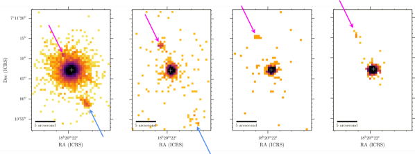
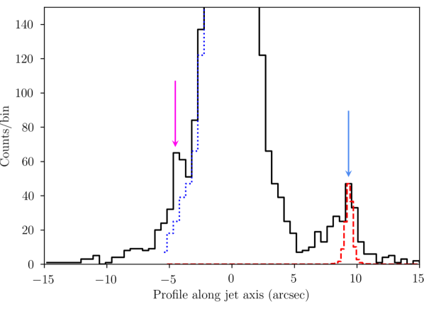
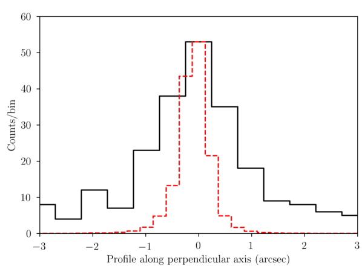
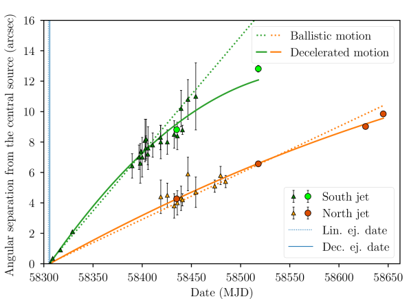
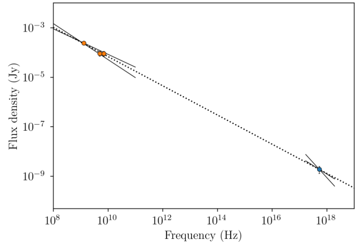

نفاثات أشعة سينية نسبية من ثنائي الأشعة السينية ذي الثقب الأسود MAXI J1820 070
070
الملخص
اكتُشف الثقب الأسود MAXI J1820070 أثناء فورة 2018، ورُصد بكثافة عبر الطيف الكهرومغناطيسي. وعقب الكشف عن نفاثات راديوية نسبية، حصلنا على أربعة أرصاد بالأشعة السينية باستخدام Chandra أُجريت بين تشرين الثاني/نوفمبر 2018 وأيار/مايو 2019، إلى جانب أرصاد راديوية نُفذت بمصفوفتي VLA وMeerKAT.
نورد هنا اكتشاف مصادر للأشعة السينية مرتبطة بالنفاثات الراديوية، تتحرك بسرعات نسبية مع احتمال تباطؤها في الأزمنة المتأخرة. وتتوافق الأطياف عريضة النطاق للنفاثات مع إشعاع سنكروتروني صادر عن جسيمات سُرّعت إلى طاقات عالية جدا ( 10 TeV) بفعل صدمات نشأت من تفاعل النفاثات مع الوسط بين النجمي. وتبلغ الطاقة الداخلية الدنيا المقدرة من أرصاد الأشعة السينية للنفاثات erg، وهي أكبر بكثير من الطاقة المحسوبة من التوهج الراديوي وحده، مما يشير إلى أن معظم الطاقة ربما لا تُشع على المقاييس الصغيرة، بل تتحرر عبر تفاعلات تحدث في أزمنة لاحقة.
10 TeV) بفعل صدمات نشأت من تفاعل النفاثات مع الوسط بين النجمي. وتبلغ الطاقة الداخلية الدنيا المقدرة من أرصاد الأشعة السينية للنفاثات erg، وهي أكبر بكثير من الطاقة المحسوبة من التوهج الراديوي وحده، مما يشير إلى أن معظم الطاقة ربما لا تُشع على المقاييس الصغيرة، بل تتحرر عبر تفاعلات تحدث في أزمنة لاحقة.
1 المقدمة
تُرصد النفاثات والتدفقات الخارجة في طيف متنوع من الأنظمة التراكمية، مثل الأجسام النجمية الفتية، وثنائيات الأشعة السينية المجرية، والنوى المجرية النشطة (AGN). ولا يزال تكوّن النفاثات وانتشارها وارتباطها بعمليات التراكم غير واضح إلى حد كبير. غير أن أثرها الراجع في بيئتها المباشرة بدأ يُقاس كميا، إذ يمكن رصد تفاعلها مع الوسط بين النجمي باستخدام صور عالية الدقة المكانية لثنائيات الأشعة السينية (Corbel et al., 2002; Migliori et al., 2017). وقد كُشفت النفاثات المجرية واسعة النطاق ذات الحركة الظاهرية فائقة اللمعان لأول مرة في GRS 1915+105 على يد Mirabel & Rodríguez (1994). وتنشأ هذه النفاثات في قذائف منفصلة تُطلق أثناء انتقالات الحالة (Corbel et al., 2004; Fender et al., 2004). ويتميز الانبعاث الراديوي المرتبط بها بكونه صادرا عن كتل سنكروترونية متطورة (van der Laan, 1966)، وكان مصيرها غير واضح إلى أن كُشف عن إعادة تنشيطها عند طاقات عالية عندما تتفاعل مع الوسط بين النجمي، كما في XTE J1550−564 (Corbel et al., 2002; Tomsick et al., 2003; Kaaret et al., 2003; Migliori et al., 2017) وH1743−322 (Corbel et al., 2005).
MAXI J1820070، الذي عُرف أولا باسم ASASSN−18ey، هو ثنائي أشعة سينية يحوي ثقبا أسود (Tucker et al., 2018; Torres et al., 2019)، وقد اكتُشف أصلا في النطاق البصري في 2018 آذار/مارس 6 بواسطة All-Sky Automated Survey for Supernovae ASAS-SN (Shappee et al., 2014; Kochanek et al., 2017)، ثم في الأشعة السينية في 2018 آذار/مارس 11 (Kawamuro et al., 2018; Denisenko, 2018) بواسطة Monitor of All-sky X-ray Image MAXI على متن محطة الفضاء الدولية (Matsuoka et al., 2009). وقد قُيدت مسافته إلى 2.96  0.33 kpc من خلال قياسات اختلاف المنظر الراديوية (Atri et al., 2020).
ورُصدت فورتاه في عامي 2018 و2019 بكثافة في النطاق الراديوي، فكشفتا عن قذف نفاثات نسبية منفصلة طويلة العمر (Bright et al., 2020). وقد حفز اكتشاف هذه النفاثات في الأطوال الموجية الراديوية البحث عن نظائر لها في الأشعة السينية.
0.33 kpc من خلال قياسات اختلاف المنظر الراديوية (Atri et al., 2020).
ورُصدت فورتاه في عامي 2018 و2019 بكثافة في النطاق الراديوي، فكشفتا عن قذف نفاثات نسبية منفصلة طويلة العمر (Bright et al., 2020). وقد حفز اكتشاف هذه النفاثات في الأطوال الموجية الراديوية البحث عن نظائر لها في الأشعة السينية.

2 الأرصاد
2.1 أرصاد الأشعة السينية باستخدام Chandra
بعد الكشف عن نفاثات راديوية ممتدة في MAXI J1820070، فعّلنا برنامجنا على Chandra (الباحث الرئيس: S. Corbel) للبحث عن انبعاث أشعة سينية ممتد مرتبط بالنفاثات. أُجريت الأرصاد باستخدام مطياف التصوير CCD المتقدم (ACIS، Townsley et al. (2000)) في 2018 تشرين الثاني/نوفمبر 13 (30 ks؛ ObsId 20207) وفي 2019 شباط/فبراير 4 و5 (2  20 ks؛ ObsId 20208 و22080). وبالإضافة إلى ذلك، استخدمنا أيضا رصدين تكميليين باستخدام ACIS-S (الباحثة الرئيسة: E. Gallo) جُدولا أثناء انحسار فورة MAXI J1820070 في 2019 أيار/مايو 24 (12 ks؛ ObsId 21203) و2019 حزيران/يونيو 11 (65 ks؛ ObsId 21205). ولم تكشف أرصاد Chandra المتبقية للحقل عن أي مصادر للأشعة السينية باستثناء MAXI J1820070؛ وتُلخص جميع الأرصاد في الجدول 1. أُجريت جميع الأرصاد في نمط المصفوفة الجزئية للحد من تكدس الفوتونات، وقصرنا التحليل على رقاقة S3، التي توفر أفضل استجابة عند الطاقات المنخفضة.
20 ks؛ ObsId 20208 و22080). وبالإضافة إلى ذلك، استخدمنا أيضا رصدين تكميليين باستخدام ACIS-S (الباحثة الرئيسة: E. Gallo) جُدولا أثناء انحسار فورة MAXI J1820070 في 2019 أيار/مايو 24 (12 ks؛ ObsId 21203) و2019 حزيران/يونيو 11 (65 ks؛ ObsId 21205). ولم تكشف أرصاد Chandra المتبقية للحقل عن أي مصادر للأشعة السينية باستثناء MAXI J1820070؛ وتُلخص جميع الأرصاد في الجدول 1. أُجريت جميع الأرصاد في نمط المصفوفة الجزئية للحد من تكدس الفوتونات، وقصرنا التحليل على رقاقة S3، التي توفر أفضل استجابة عند الطاقات المنخفضة.
نُفذ تحليل بيانات الأشعة السينية باستخدام برمجية Chandra Interactive Analysis of Observation (CIAO) الإصدار 4.11 (Fruscione et al., 2006)، مع ملفات المعايرة CALDB الإصدار 4.8.4.1. وشُغل السكربت chandra_repro لإعادة معالجة الأرصاد. وعولج رصد تشرين الثاني/نوفمبر 2018 لإزالة أثر القراءة في ACIS، ثم دُمج الرصدان المأخوذان في شباط/فبراير 2019. وبعد ذلك رُشحت جميع الأرصاد للإبقاء فقط على الأحداث ضمن مدى الطاقة 0.3 – 8 keV. واستُخدم سكربت fluximage لإنشاء صور الأشعة السينية، مع إبقاء حجم الخانة عند 1 (1 بكسل = 0.492″).
2.2 الأرصاد الراديوية باستخدام VLA وMeerKAT
رُصد MAXI J1820070 أيضا في الأطوال الموجية الراديوية (انظر الجدول 1). ونستخدم رصدين أُجريا بمصفوفة Karl G. Jansky Very Large Array (VLA) (Perley et al., 2011). وكانت الأرصاد شبه متزامنة مع الرصدين الأول والثاني باستخدام Chandra وMeerKAT، وبزمن تكامل على الهدف قدره 30 دقيقة في 2018 تشرين الثاني/نوفمبر 9 و38 دقيقة في 2019 شباط/فبراير 2. كانت المصفوفة في تشكيل D (حزمة مصطنعة قدرها 12″) أثناء رصد تشرين الثاني/نوفمبر، وفي تشكيل C (حزمة مصطنعة قدرها 3.5″) أثناء رصد شباط/فبراير. وأُجري كلا الرصدين في النطاق C، المتمركز عند 6 GHz. ويبلغ عرض النطاق الكلي لـVLA مقدار 4.096 GHz، مقسما إلى 32 نوافذ طيفية عرض كل منها 128 MHz، وتنقسم كل نافذة مرة أخرى إلى 64 قناة بعرض 2 MHz.
MeerKAT (Jonas & MeerKAT Team, 2016; Camilo et al., 2018; Mauch et al., 2020) مصفوفة مكونة من 64 هوائيا قطر كل منها 13.5m تقع في Northern Cape بجنوب أفريقيا. وتبلغ دقتها المكانية نحو 5″. وينقسم عرض نطاقها إلى 4096 قناة بعرض 209 kHz، مما يجعل عرض النطاق الكلي 856 MHz متمركزا عند 1.284 GHz (النطاق L). وقد رُصد MAXI J1820070 بانتظام أثناء فوراته ضمن مشروع ThunderKAT Large Survey Project (Fender et al., 2017)، ونركز هنا على الرصدين المأخوذين في 2018 تشرين الثاني/نوفمبر 13 ومدته 45 دقيقة، وفي 2019 شباط/فبراير 1 ومدته 15 دقيقة. وتُعرض كثافات الفيض الراديوي،  ، والمؤشرات الطيفية الراديوية، ، المعرفة بأنها ، في الجدول 2. انظر Bright et al. (2020) لمزيد من التفاصيل عن الرصد الراديوي ونتائجه.
، والمؤشرات الطيفية الراديوية، ، المعرفة بأنها ، في الجدول 2. انظر Bright et al. (2020) لمزيد من التفاصيل عن الرصد الراديوي ونتائجه.
استُخدمت حزمة Common Astronomy Software Applications (CASA) بالإصدار 5.1.1-5 في جميع عمليات اختزال البيانات الراديوية (McMullin et al., 2007). عُيرت البيانات باستخدام معيّري الفيض 3C286 لـVLA وPKS B1934-638 لـMeerKAT، ومعيّري الطور J1824+1044 لـVLA وJ1733-1304 لـMeerKAT. أُنتجت الصور من البيانات المعايرة باستخدام خوارزمية CLEAN (Högbom, 1974) ضمن CASA. واخترنا خلايا مقدارها 1.5″ لصور MeerKAT. وقُسمت بيانات VLA إلى نطاقين فرعيين، يضم كل منهما 2 من النوافذ الطيفية 16، يتمركز النطاق الفرعي الأول عند 5 GHz والثاني عند 7 GHz تقريبا. وصُورت النطاقات الفرعية منفصلة لتقليل الآثار الاصطناعية، بخلايا مقدارها 2.5 و1.6″ على التوالي في تشكيل D، و0.7″ و0.5″ في تشكيل C. واستُخدم ترجيح متين (Briggs, 1995) بقيمة لجميع الصور.
3 النتائج
3.1 الكشف عن المصادر
استُخدمت أداة CIAO المسماة wavdetect لتحديد مصادر الأشعة السينية في أرصاد Chandra. وداخل نصف قطر قدره 30″ حول موضع MAXI J1820070، كُشفت ثلاثة مصادر أشعة سينية مصطفة في صورتي تشرين الثاني/نوفمبر 2018 وشباط/فبراير 2019. وكان أحدها متوافقا مع موقع MAXI J1820070، في حين تحرك المصدران الآخران بين تشرين الثاني/نوفمبر وشباط/فبراير. وفي أيار/مايو 2019 وحزيران/يونيو لم يُكشف إلا مصدران، أحدهما متوافق مع موضع MAXI J1820070، والآخر إلى الشمال بإزاحة أكبر مقارنة بالأرصاد السابقة. وتبلغ الزاوية بين محور المصادر المصطفة والشمال .
تُعرض الصور المستحصلة في الشكل 1. وتُسرد الفواصل الزاوية بين المصدر المركزي والمصادر المرصودة الأخرى في الجدول 2. وفيما يلي نشير إلى المصادر المتحركة باسم النفاثة الشمالية والنفاثة الجنوبية، استنادا إلى موقعها بالنسبة إلى MAXI J1820070.
كانت عملية الكشف عن المصادر متشابهة في جميع الصور الراديوية. وبسبب الدقة المكانية الأدنى في الخرائط الراديوية مقارنة بـChandra، استخدمنا مواقع Chandra لتقييد مكونات الخرائط الراديوية. واستُخدمت مهمة CASA المسماة imfit لإجراء ملاءمات غاوسية ثنائية الأبعاد 2D. وقد لُوئمت أولا مصادر نقطية (غاوسيات 2D بحجم الحزمة) على جميع مواضع النواة الثابتة المأخوذة من بيانات Chandra. ثم فُحصت الصور المتبقية، ولُوئمت مصادر نقطية على مواضع نفاثات Chandra الثابتة. وتُعرض الفيوض الراديوية المستحصلة من هذه الملاءمات في الجدول 2.
3.2 التحليل الطيفي
استُخرجت أطياف المصدر والخلفية للأجسام الثلاثة المرصودة باستخدام سكربت specextract. وبالنسبة إلى جميع المصادر في جميع الأرصاد، باستثناء النفاثة الشمالية في تشرين الثاني/نوفمبر، اختيرت خلفية دائرية من منطقة خالية من المصادر على الرقاقة.


وبما أن مقطع النفاثة الشمالية في رصد تشرين الثاني/نوفمبر (الشكل 2) كشف عن تداخل مع أجنحة الثقب الأسود المركزي، فقد استُخرج طيف خلفيتها من حلقة جزئية حول الثقب الأسود (بنصف قطر داخلي 3.2″ ونصف قطر خارجي 5.2″، مع طرح المنطقة الإهليلجية للنفاثة الشمالية). ثم أُجري التحليل الطيفي للأشعة السينية باستخدام XSPEC (Arnaud, 1996) وSherpa، وهي تطبيق النمذجة والملاءمة في CIAO الذي طوّره Chandra X-ray Center (Freeman et al., 2001).
لُوئمت الأطياف المستخرجة من النفاثتين الشمالية والجنوبية بنموذج قانون قدرة ممتص ذي مؤشر فوتوني  (tbabs * powerlaw)، باستخدام الوفرة من Wilms et al. (2000). وحُصل على قيمة كثافة عمود الهيدروجين البالغة cm-2 بملاءمة أطياف MAXI J1820070 في شباط/فبراير 2019 باستخدام إحصاء cstat، إذ لم يكن متأثرا بتكدس الفوتونات الذي يظهر في المصادر الساطعة. ثم ثبتنا كثافة عمود الهيدروجين عند أفضل قيمة ملاءمة.
وتُعرض قيمة الفيض غير الممتص في النطاق 0.3 – 8 keV والمؤشر الفوتوني المستحصلان في الجدول 2.
(tbabs * powerlaw)، باستخدام الوفرة من Wilms et al. (2000). وحُصل على قيمة كثافة عمود الهيدروجين البالغة cm-2 بملاءمة أطياف MAXI J1820070 في شباط/فبراير 2019 باستخدام إحصاء cstat، إذ لم يكن متأثرا بتكدس الفوتونات الذي يظهر في المصادر الساطعة. ثم ثبتنا كثافة عمود الهيدروجين عند أفضل قيمة ملاءمة.
وتُعرض قيمة الفيض غير الممتص في النطاق 0.3 – 8 keV والمؤشر الفوتوني المستحصلان في الجدول 2.
| Chandra date | Frame time | MeerKAT date | VLA date | |||||||||
|---|---|---|---|---|---|---|---|---|---|---|---|---|
| Obs no. | Chandra ObsId | Subarray | ||||||||||
| (dd/mm/yy) | (s) | (dd/mm/yy) | (dd/mm/yy) | |||||||||
| 1 | 20207 |
|
1/4 | 0.8 |
|
|
||||||
| 2 | 20208 |
|
1/4 | 0.8 |
|
|
||||||
| 22080 |
|
1/4 | 0.8 | |||||||||
| 3 | 21203 |
|
1/8 | 0.7 | ||||||||
| 4 | 21204 |
|
1/8 | 0.6 | ||||||||
| 5 | 21205 |
|
1/8 | 0.6 |
| Separation | 0.3 – 8 keV flux | 1.3 GHz flux | 5 GHz flux | 7 GHz flux | ||||
|---|---|---|---|---|---|---|---|---|
| Observation | Source | |||||||
| (″) | ( erg cm-2 s-1) | (mJy) | (mJy) | (mJy) | ||||
| 1 | South jet | 8.81 0.06 | ||||||
| North jet | 4.27 0.04 | |||||||
| 2 | South jet | 12.82 0.22 | aaلا يوجد كشف، حد أعلى عند . | aaلا يوجد كشف، حد أعلى عند . | aaلا يوجد كشف، حد أعلى عند . | |||
| North jet | 6.57 0.09 | |||||||
| 3 | North jet | 9.02 0.12 | bbثُبت عند 1.6 بسبب العدد المنخفض من الفوتونات. | |||||
| 5 | North jet | 9.85 0.16 | bbثُبت عند 1.6 بسبب العدد المنخفض من الفوتونات. |
Note. — الفصل هو الفصل الزاوي عن المصدر الرئيس بالثواني القوسية. ويُعطى فيض الأشعة السينية غير الممتص بين 0.3 keV و8 keV بوحدات erg cm-2 s-1. ويمثل  المؤشر الطيفي الراديوي. ويمثل
المؤشر الطيفي الراديوي. ويمثل  مؤشر فوتونات الأشعة السينية.
مؤشر فوتونات الأشعة السينية.
3.3 المورفولوجيا
بما أن الدقة الزاوية لصور الأشعة السينية أعلى من دقة الصور الراديوية، فقد درسنا مورفولوجيا النفاثتين الشمالية والجنوبية باستخدام بيانات Chandra وحدها. واستخرجنا من كل صورة Chandra المقطع على طول المحور الذي تشكله النفاثتان، وجمعناه على عرض 4". واستخدمنا مقطع MAXI J1820070 تقديرا لدالة انتشار النقطة (PSF) لأداة Chandra في جميع الأرصاد باستثناء رصد تشرين الثاني/نوفمبر 2018 الذي عانى تكدسا شديدا. ولذلك استخدمنا MARX بالإصدار 5.4.0 (Davis et al., 2012) لمحاكاة PSF الخاصة بـChandra من دون تكدس في ذلك الرصد بعينه. ثم أُعيد تحجيم مقطع PSF ورُسم فوق مقطع النفاثات لتقدير امتداد النفاثة.
وكمثال، فإن المقطع المستحصل من تشرين الثاني/نوفمبر 2018 مع إسقاط PSF فوق النفاثة الجنوبية يُعرض في الشكل 2 (اللوحة العلوية). وأُجري اختبار Kolmogorov-Smirnov (KS) بمقارنة مقاطع النفاثات بمقاطع PSF لتحديد ما إذا كانت النفاثات محلولة، وكانت الفرضية العدمية أن العينتين مسحوبتان من التوزيع نفسه. والنفاثة الجنوبية في شباط/فبراير 2019 خافتة للغاية، وفوتوناتها مبعثرة على نحو واسع، بحيث لا يكون الاختبار حاسما، رغم أنها تبدو محلولة في الصورة. ووفقا لنتائج اختبارات KS الأخرى، فإن النفاثة الجنوبية في تشرين الثاني/نوفمبر 2018 وحدها تمتلك توزعا مختلفا بدرجة معنوية عن PSF، مع قيمة p مقدارها ، ما يدل على أنها محلولة عند مستوى ثقة 95%.
وبما أن النفاثة الجنوبية محلولة على طول محور النفاثات في تشرين الثاني/نوفمبر 2018، فقد حسبنا أيضا مقطعها عموديا على ذلك المحور (الشكل 2، اللوحة السفلية). ويسمح لنا اختبار KS لمقطع النفاثة مقابل مقطع PSF على طول محور عمودي برفض الفرضية العدمية القائلة إن العينتين آتيتان من التوزيع نفسه، مع قيمة p مقدارها عند مستوى ثقة 95%.
ومن ثم فإن النفاثة الجنوبية محلولة في رصد Chandra لشهر تشرين الثاني/نوفمبر، بحجم يبلغ  طولا و
طولا و عموديا على محورها (انظر القسم 4.2 لمزيد من النقاش حول النفاثة المحلولة). ويمكن تقدير الخطأ في هذه الأبعاد بعرض الخانة، أي . وبسبب نمذجة هذه النفاثة كمخروط مبتور، تعطي هذه الأبعاد زاوية فتح للنفاثة مقدارها °.
عموديا على محورها (انظر القسم 4.2 لمزيد من النقاش حول النفاثة المحلولة). ويمكن تقدير الخطأ في هذه الأبعاد بعرض الخانة، أي . وبسبب نمذجة هذه النفاثة كمخروط مبتور، تعطي هذه الأبعاد زاوية فتح للنفاثة مقدارها °.
4 المناقشة
أدت أرصاد Chandra الجديدة لـMAXI J1820070، المنفذة أثناء انحسار فورتيه في 2018 و2019، إلى الكشف عن مصدرين جديدين ومتغيرين للأشعة السينية يبتعدان عن الثقب الأسود المركزي. وتتوافق هذه المصادر مع مواضع النفاثات الراديوية التي رصدها Bright et al. (2020). وفي أرصاد Chandra في تشرين الثاني/نوفمبر، تكون النفاثة الجنوبية محلولة على نحو مواز لمحور النفاثة وعمودي عليه. ومن المرجح أننا نشهد تفاعل نفاثات MAXI J1820070 مع الوسط بين النجمي (ISM)، على غرار ما رُصد من XTE J1550−564 (Corbel et al., 2002; Kaaret et al., 2003; Tomsick et al., 2003; Migliori et al., 2017) وH1743−322 (Corbel et al., 2005).
4.1 حركة النفاثات
تشير الفواصل الزاوية المستخرجة من صور Chandra والمقدمة في الجدول 2 إلى أن النفاثتين تتحركان. ندرس حركتيهما الظاهريتين من بيانات Chandra وباستخدام الفواصل الزاوية المستحصلة راديويا بواسطة Bright et al. (2020). وتوسع بياناتنا التغطية الزمنية بإضافة أرصاد لاحقة بكثير. وبالنسبة إلى كلتا النفاثتين، رُسم الفصل الزاوي بدلالة الزمن في الشكل 3.

ننمذج حركة النفاثات إما بسرعة ثابتة () أو بتباطؤ ثابت ( مع ). وكانت الملاءمة الأولى المنفذة (الخط المتقطع في الشكل 3) ملاءمة خطية تفترض تاريخ قذف مشتركا وحركة بالستية لكلتا النفاثتين. وتعطي الملاءمات المشتركة تاريخ قذف عند MJD . وإضافة إلى ذلك، لائمنا البيانات بنموذج تباطؤ ثابت يفترض أيضا تاريخ قذف مشتركا لكلتا النفاثتين (ولكن ليس بالضرورة التاريخ نفسه كما في نموذج الإطلاق الخطي)، وتعطي الملاءمات المشتركة MJD كتاريخ قذف في النموذج المتباطئ.
ويتوافق تاريخ القذف المستحصل من النموذج المتباطئ مع التاريخ (MJD ) الذي قاسه Bright et al. (2020) من دون بيانات Chandra، والذي حدث أثناء فترة الانتقال من الحالة الصلبة إلى الحالة اللينة وفقا لـShidatsu et al. (2019). ومن جهة أخرى، يبدو تاريخ القذف المستحصل باستخدام النموذج الخطي مبكرا بنحو يوم واحد مقارنة بالتوهج الذي رصده Bright et al. (2019). ويرجع ذلك إلى أن موضع النفاثات في أرصاد Chandra عند الأزمنة المتأخرة لا يفضل النموذج البالستي، ومن ثم يعزز النموذج الذي تتفاعل فيه النفاثات مع ISM.
الحركات الخاصة المستحصلة من الملاءمة البالستية هي mas d-1 و mas d-1. وتعطي فرضية التباطؤ الثابت سرعات ابتدائية مقدارها mas d-1 و mas d-1. وقيم التسارع هي mas d-2 و mas d-2. وبافتراض مسافة قدرها 2.96 kpc (Atri et al., 2020)، يقابل ذلك سرعتين ابتدائيتين ظاهريتين مقداراهما تقريبا 0.61 c و1.59 c على التوالي. وتشير السرعة الظاهرية فائقة اللمعان للنفاثة الجنوبية، وهي أعلى بكثير من السرعة الظاهرية للنفاثة الشمالية، إلى أن النفاثة الجنوبية هي المكون المقترب من القذف، في حين أن النفاثة الشمالية هي المكون المتراجع. وتتوافق طبيعة النفاثتين المقتربة والمتراجعة وسرعتاهما مع ما وجده Bright et al. (2020)، مع الأخذ في الاعتبار أننا نملك بيانات إضافية في زمن لاحق لإجراء الملاءمات.
ولتقييم جودة ملاءمة النموذجين الخطي والمتباطئ للبيانات المرصودة، حسبنا إحصاء كاي-تربيع لكلتا الملاءمتين المشتركتين. وتبلغ قيمة كاي-تربيع المختزلة للنموذج الخطي و للنموذج المتباطئ. وعلى الرغم من أن القيمتين عاليتان نسبيا، وهو ما يمكن أن يعزى إلى أشرطة الخطأ الصغيرة نسبيا لنقاط بيانات Chandra، فإن القيمة الأصغر تشير إلى أن البيانات أكثر اتساقا مع فرضية التباطؤ الثابت، موافقة لما كان قد لُمح إليه بالفعل بالنسبة إلى النفاثة الجنوبية. وعلاوة على ذلك، فإن قياس فصل زاوي قدره 14 mas بين النفاثتين عند MJD 58306.22 بواسطة Bright et al. (2020) يقتضي تاريخ قذف حول MJD 58306.1، باستخدام السرعات المستحصلة لكلا النموذجين. وهذا لا يتوافق مع تاريخ القذف المستنتج للحركة البالستية، ويعزز أرجحية الحركة المتباطئة.
ومن ثم فإن إضافة أرصاد Chandra تدعم بقوة أن النفاثات متباطئة، وهو ما لم يكن ممكنا استنتاجه من Bright et al. (2020) اعتمادا على البيانات الراديوية وحدها. ويعني ذلك أن النفاثتين ربما انبعثتا في الوقت نفسه ثم تباطأتا تدريجيا، ربما بفعل تفاعل مع بيئتهما.
وقد توحي قيم  العالية نسبيا بأن التباطؤ في الحقيقة ليس ثابتا. فقد اقتُرح أن ثنائيات الأشعة السينية يمكن أن تقع داخل فقاعات منخفضة الكثافة (Heinz, 2002). وفي تلك الحالة، سيزداد التباطؤ عندما تتفاعل النفاثات مع ISM الأعلى كثافة عند حافة الفقاعة. فعلى سبيل المثال، وجد Wang et al. (2003) وHao & Zhang (2009) وSteiner & McClintock (2012) أن النفاثات المرصودة في XTE J1550−564 يمكن أن تتباطأ بفعل تفاعلها مع ISM المحيط، وهو تفاعل يسرع جسيمات النفاثة (واستُدعيت نتائج مماثلة أيضا في H1743−322)، بما قد يدل على أن جزءا معتبرا من ثنائيات الأشعة السينية قد يكون محاطا بتجاويف واسعة النطاق ومنخفضة الكثافة.
العالية نسبيا بأن التباطؤ في الحقيقة ليس ثابتا. فقد اقتُرح أن ثنائيات الأشعة السينية يمكن أن تقع داخل فقاعات منخفضة الكثافة (Heinz, 2002). وفي تلك الحالة، سيزداد التباطؤ عندما تتفاعل النفاثات مع ISM الأعلى كثافة عند حافة الفقاعة. فعلى سبيل المثال، وجد Wang et al. (2003) وHao & Zhang (2009) وSteiner & McClintock (2012) أن النفاثات المرصودة في XTE J1550−564 يمكن أن تتباطأ بفعل تفاعلها مع ISM المحيط، وهو تفاعل يسرع جسيمات النفاثة (واستُدعيت نتائج مماثلة أيضا في H1743−322)، بما قد يدل على أن جزءا معتبرا من ثنائيات الأشعة السينية قد يكون محاطا بتجاويف واسعة النطاق ومنخفضة الكثافة.
ومع ذلك، وجد Bright et al. (2020) أن معدل اضمحلال الانبعاث الراديوي الآتي من النفاثات بطيء جدا، وعزوا ذلك إلى تفاعل مستمر جار مع ISM. وقد يدعم ذلك تباطؤا ثابتا، ولا سيما أننا لا نملك بيانات يمكن أن تشير إلى حركة بالستية في بداية الانتشار.
4.2 الميزانية الطاقية
باستخدام الأرصاد المتاحة (Chandra وVLA وMeerKAT)، نستطيع بناء الأطياف عريضة النطاق للنفاثتين المقتربة والمتراجعة في تشرين الثاني/نوفمبر 2018، وللنفاثة المتراجعة في شباط/فبراير 2019. ويمكن ملاءمة توزيعات الطاقة الطيفية الثلاثة بقوانين قدرة منفردة ذات مؤشرات طيفية مقدارها للنفاثة المقتربة في تشرين الثاني/نوفمبر 2018، و للنفاثة المتراجعة في تشرين الثاني/نوفمبر 2018، و للنفاثة المتراجعة في شباط/فبراير 2019. ويعرض الشكل 4 توزيع الطاقة الطيفية (SED) للنفاثة المقتربة في تشرين الثاني/نوفمبر 2018.

تتسق هذه المؤشرات الطيفية مع المتوقع من انبعاث سنكروتروني رقيق بصريا تنتجه جسيمات مسرعة بالصدمات. فالحركة الظاهرية للنفاثات تبدو أنها تفضل تباطؤا محتملا بدلا من انتشار بالستي بسيط. وقد يكون ذلك ناجما عن تفاعل النفاثات مع ISM كما رُصد سابقا في XTE J1550−564 (Corbel et al., 2002; Migliori et al., 2017) وH1743−322 (Corbel et al., 2005). وسيكون هذا التفاعل مسؤولا عن تسريع جسيمات النفاثات، ومن ثم عن الانبعاث السنكروتروني عريض النطاق المرصود.
ولتقدير الطاقة الداخلية للنفاثات، نستخدم الحجم المقاس المستحصل للنفاثة الجنوبية من رصد Chandra في 2018 تشرين الثاني/نوفمبر، انظر الشكل 2. ثم تُنمذج النفاثة كمخروط مبتور تقع قمته عند المصدر المركزي، بارتفاع وعرض وزاوية فتح 7.1°. وباستخدام 2.96 kpc مسافة إلى MAXI J1820070 (Atri et al., 2020)، يقابل ذلك حجما قدره cm3، ونفاثة أبعادها AU في AU، وهو ما يتوافق مع التقدير الذي أجراه Bright et al. (2020). وكان تقديرهم قد حُصل عليه قبل 40 يوما باستنتاجه من مقارنات الفيض الراديوي، في حين حصلنا نحن مباشرة على حجم فيزيائي باستخدام بيانات Chandra.
وباستخدام ميل توزيع الطاقة الطيفية (الشكل 4) للنفاثة المقتربة، الذي يعطي ، نقدر لمعانا إشعاعيا كليا مقداره erg s-1 بين 1.3 GHz و GHz.
وفي ظل الفرضية القياسية للتجهيز الطاقي المتساوي، وبافتراض أن كل الطاقة مخزونة في الإلكترونات (ولا تحمل البروتونات طاقة)، يمكننا تقدير الطاقة الداخلية الدنيا للبلازما المصدرة للسنكروترون.
واتباعا لـFender et al. (1999)، نقدر معاملات الانبعاث السنكروتروني بالمعادلات الواردة في Longair (2011) (انظر القسم 16.5)، مستخدمين الاصطلاح المعاكس لإشارة  . وينتج من ذلك طاقة داخلية دنيا مقدارها erg وحقل مغناطيسي عند التجهيز الطاقي المتساوي من رتبة G.
ويقتضي ذلك إلكترونات مشعة ذات عامل لورنتز مقداره
. وينتج من ذلك طاقة داخلية دنيا مقدارها erg وحقل مغناطيسي عند التجهيز الطاقي المتساوي من رتبة G.
ويقتضي ذلك إلكترونات مشعة ذات عامل لورنتز مقداره  ، أي إلكترونات مسرعة حتى طاقات > 10 TeV، ومقياس زمن تبريد يبلغ اثنتين وعشرين سنة. ويقود ذلك أيضا إلى تقدير عدد من الإلكترونات في النفاثات، وإذا كان هناك بروتون واحد لكل إلكترون، فإننا نستنتج كتلة للبلازما مقدارها
، أي إلكترونات مسرعة حتى طاقات > 10 TeV، ومقياس زمن تبريد يبلغ اثنتين وعشرين سنة. ويقود ذلك أيضا إلى تقدير عدد من الإلكترونات في النفاثات، وإذا كان هناك بروتون واحد لكل إلكترون، فإننا نستنتج كتلة للبلازما مقدارها  g.
ومن ثم ستكون الطاقة الكلية في الإلكترونات erg، والطاقة في الحقل المغناطيسي erg (متوافقة مع تقديرات Bright et al. 2020 باستخدام الأرصاد الراديوية وحدها). ويعزز ذلك نتيجتهم القائلة إن الطاقة الداخلية الدنيا للنفاثة أكبر بدرجة معتبرة (
g.
ومن ثم ستكون الطاقة الكلية في الإلكترونات erg، والطاقة في الحقل المغناطيسي erg (متوافقة مع تقديرات Bright et al. 2020 باستخدام الأرصاد الراديوية وحدها). ويعزز ذلك نتيجتهم القائلة إن الطاقة الداخلية الدنيا للنفاثة أكبر بدرجة معتبرة ( مرة) من الطاقة المستنتجة من التوهج الراديوي الذي يُعتقد أنه أصل القذائف (Bright et al., 2018).
وما لم يكن جزء معتبر من الطاقة قد شُع عند طول موجي مختلف أثناء الإطلاق (مثلا في الأشعة السينية، إذ أورد Homan et al. (2020) توهجا صغيرا في النطاق 7-12 keV قبل التوهج الراديوي مباشرة)، فإن ذلك يشير إلى أن غالبية طاقة النفاثات لا تُشع، بل تتحرر عندما تتفاعل مع الوسط المحيط.
وفضلا عن ذلك، تتوافق الكميات أعلاه مع ما استُخلص في XTE J1550564 (Tomsick et al., 2003) وH1743322 (Corbel et al., 2005)، مما يشير إلى أن آلية مشتركة قد تكون فاعلة في المصادر المختلفة التي تبدي نفاثات من الراديو إلى الأشعة السينية.
مرة) من الطاقة المستنتجة من التوهج الراديوي الذي يُعتقد أنه أصل القذائف (Bright et al., 2018).
وما لم يكن جزء معتبر من الطاقة قد شُع عند طول موجي مختلف أثناء الإطلاق (مثلا في الأشعة السينية، إذ أورد Homan et al. (2020) توهجا صغيرا في النطاق 7-12 keV قبل التوهج الراديوي مباشرة)، فإن ذلك يشير إلى أن غالبية طاقة النفاثات لا تُشع، بل تتحرر عندما تتفاعل مع الوسط المحيط.
وفضلا عن ذلك، تتوافق الكميات أعلاه مع ما استُخلص في XTE J1550564 (Tomsick et al., 2003) وH1743322 (Corbel et al., 2005)، مما يشير إلى أن آلية مشتركة قد تكون فاعلة في المصادر المختلفة التي تبدي نفاثات من الراديو إلى الأشعة السينية.
References
- Arnaud (1996) Arnaud, K. A. 1996, in Astronomical Society of the Pacific Conference Series, Vol. 101, Astronomical Data Analysis Software and Systems V, ed. G. H. Jacoby & J. Barnes, 17
- Astropy Collaboration et al. (2013) Astropy Collaboration, Robitaille, T. P., Tollerud, E. J., et al. 2013, A&A, 558, A33, doi: 10.1051/0004-6361/201322068
- Atri et al. (2020) Atri, P., Miller-Jones, J. C. A., Bahramian, A., et al. 2020, MNRAS, 493, L81, doi: 10.1093/mnrasl/slaa010
- Briggs (1995) Briggs, D. S. 1995, in American Astronomical Society Meeting Abstracts, Vol. 187, 112.02
- Bright et al. (2018) Bright, J., Motta, S., Fender, R., Perrott, Y., & Titterington, D. 2018, The Astronomer’s Telegram, 11827, 1
- Bright et al. (2019) Bright, J., Motta, S., Williams, D., et al. 2019, The Astronomer’s Telegram, 13041, 1
- Bright et al. (2020) Bright, J. S., Fender, R. P., Motta, S. E., et al. 2020, Nature Astronomy, doi: 10.1038/s41550-020-1023-5
- Camilo et al. (2018) Camilo, F., Scholz, P., Serylak, M., et al. 2018, The Astrophysical Journal, 856, 180, doi: 10.3847/1538-4357/aab35a
- Corbel et al. (2004) Corbel, S., Fender, R. P., Tomsick, J. A., Tzioumis, A. K., & Tingay, S. 2004, The Astrophysical Journal, 617, 1272, doi: 10.1086/425650
- Corbel et al. (2002) Corbel, S., Fender, R. P., Tzioumis, A. K., et al. 2002, Science, 298, 196, doi: 10.1126/science.1075857
- Corbel et al. (2005) Corbel, S., Kaaret, P., Fender, R. P., et al. 2005, The Astrophysical Journal, 632, 504, doi: 10.1086/432499
- Davis et al. (2012) Davis, J. E., Bautz, M. W., Dewey, D., et al. 2012, in Society of Photo-Optical Instrumentation Engineers (SPIE) Conference Series, Vol. 8443, Proc. SPIE, 84431A, doi: 10.1117/12.926937
- Denisenko (2018) Denisenko, D. 2018, The Astronomer’s Telegram, 11400, 1
- Fender et al. (2017) Fender, R., Woudt, P. A., Armstrong, R., et al. 2017, arXiv e-prints, arXiv:1711.04132. https://arxiv.org/abs/1711.04132
- Fender et al. (2004) Fender, R. P., Belloni, T. M., & Gallo, E. 2004, Monthly Notices of the Royal Astronomical Society, 355, 1105, doi: 10.1111/j.1365-2966.2004.08384.x
- Fender et al. (1999) Fender, R. P., Garrington, S. T., McKay, D. J., et al. 1999, Monthly Notices of the Royal Astronomical Society, 304, 865, doi: 10.1046/j.1365-8711.1999.02364.x
- Freeman et al. (2001) Freeman, P., Doe, S., & Siemiginowska, A. 2001, in Society of Photo-Optical Instrumentation Engineers (SPIE) Conference Series, Vol. 4477, Proc. SPIE, ed. J.-L. Starck & F. D. Murtagh, 76–87, doi: 10.1117/12.447161
- Fruscione et al. (2006) Fruscione, A., McDowell, J. C., Allen, G. E., et al. 2006, in Society of Photo-Optical Instrumentation Engineers (SPIE) Conference Series, Vol. 6270, Society of Photo-Optical Instrumentation Engineers (SPIE) Conference Series, 62701V, doi: 10.1117/12.671760
- Hao & Zhang (2009) Hao, J. F., & Zhang, S. N. 2009, ApJ, 702, 1648, doi: 10.1088/0004-637X/702/2/1648
- Heinz (2002) Heinz, S. 2002, A&A, 388, L40, doi: 10.1051/0004-6361:20020402
- Högbom (1974) Högbom, J. A. 1974, Astronomy & Astrophysics Supplement, 15, 417
- Homan et al. (2020) Homan, J., Bright, J., Motta, S. E., et al. 2020, ApJ, 891, L29, doi: 10.3847/2041-8213/ab7932
- Jonas & MeerKAT Team (2016) Jonas, J., & MeerKAT Team. 2016, in Proceedings of MeerKAT Science: On the Pathway to the SKA. 25-27 May, 1
- Kaaret et al. (2003) Kaaret, P., Corbel, S., Tomsick, J. A., et al. 2003, ApJ, 582, 945, doi: 10.1086/344540
- Kawamuro et al. (2018) Kawamuro, T., Negoro, H., Yoneyama, T., et al. 2018, The Astronomer’s Telegram, 11399, 1
- Kochanek et al. (2017) Kochanek, C. S., Shappee, B. J., Stanek, K. Z., et al. 2017, PASP, 129, 104502, doi: 10.1088/1538-3873/aa80d9
- Longair (2011) Longair, M. S. 2011, High Energy Astrophysics, 3rd edn. (Cambridge University Press)
- Matsuoka et al. (2009) Matsuoka, M., Kawasaki, K., Ueno, S., et al. 2009, PASJ, 61, 999, doi: 10.1093/pasj/61.5.999
- Mauch et al. (2020) Mauch, T., Cotton, W. D., Condon, J. J., et al. 2020, ApJ, 888, 61, doi: 10.3847/1538-4357/ab5d2d
- McMullin et al. (2007) McMullin, J. P., Waters, B., Schiebel, D., Young, W., & Golap, K. 2007, in Astronomical Society of the Pacific Conference Series, Vol. 376, Astronomical Data Analysis Software and Systems XVI, ed. R. A. Shaw, F. Hill, & D. J. Bell, 127
- Migliori et al. (2017) Migliori, G., Corbel, S., Tomsick, J. A., et al. 2017, Monthly Notices of the Royal Astronomical Society, 472, 141, doi: 10.1093/mnras/stx1864
- Mirabel & Rodríguez (1994) Mirabel, I. F., & Rodríguez, L. F. 1994, Nature, 371, 46, doi: 10.1038/371046a0
- Perley et al. (2011) Perley, R. A., Chandler, C. J., Butler, B. J., & Wrobel, J. M. 2011, The Astrophysical Journal Letters, 739, L1, doi: 10.1088/2041-8205/739/1/L1
- Price-Whelan et al. (2018) Price-Whelan, A. M., Sipőcz, B. M., Günther, H. M., et al. 2018, AJ, 156, 123, doi: 10.3847/1538-3881/aabc4f
- Robitaille & Bressert (2012) Robitaille, T., & Bressert, E. 2012, APLpy: Astronomical Plotting Library in Python. http://ascl.net/1208.017
- Shappee et al. (2014) Shappee, B. J., Prieto, J. L., Grupe, D., et al. 2014, ApJ, 788, 48, doi: 10.1088/0004-637X/788/1/48
- Shidatsu et al. (2019) Shidatsu, M., Nakahira, S., Murata, K. L., et al. 2019, The Astrophysical Journal, 874, 183, doi: 10.3847/1538-4357/ab09ff
- Steiner & McClintock (2012) Steiner, J. F., & McClintock, J. E. 2012, ApJ, 745, 136, doi: 10.1088/0004-637X/745/2/136
- Tomsick et al. (2003) Tomsick, J. A., Corbel, S., Fender, R., et al. 2003, ApJ, 582, 933, doi: 10.1086/344703
- Torres et al. (2019) Torres, M. A. P., Casares, J., Jiménez-Ibarra, F., et al. 2019, ApJ, 882, L21, doi: 10.3847/2041-8213/ab39df
- Townsley et al. (2000) Townsley, L. K., Broos, P. S., Garmire, G. P., & Nousek, J. A. 2000, ApJ, 534, L139, doi: 10.1086/312672
- Tucker et al. (2018) Tucker, M. A., Shappee, B. J., Holoien, T. W. S., et al. 2018, The Astrophysical Journal, 867, L9, doi: 10.3847/2041-8213/aae88a
- van der Laan (1966) van der Laan, H. 1966, Nature, 211, 1131, doi: 10.1038/2111131a0
- Wang et al. (2003) Wang, X. Y., Dai, Z. G., & Lu, T. 2003, ApJ, 592, 347, doi: 10.1086/375638
- Wilms et al. (2000) Wilms, J., Allen, A., & McCray, R. 2000, The Astrophysical Journal, 542, 914, doi: 10.1086/317016